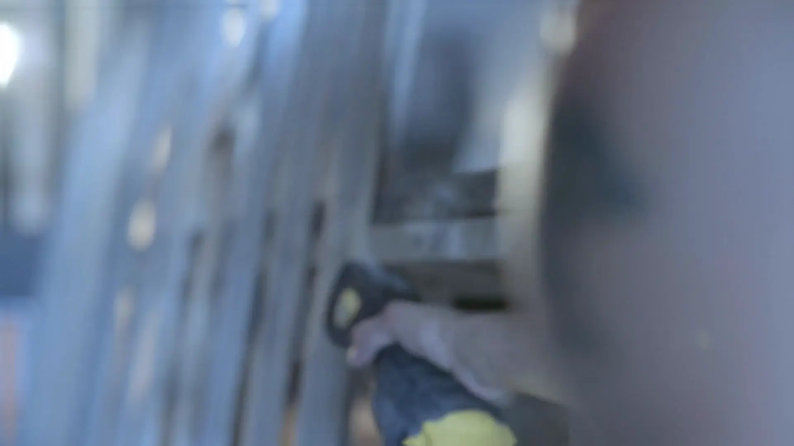
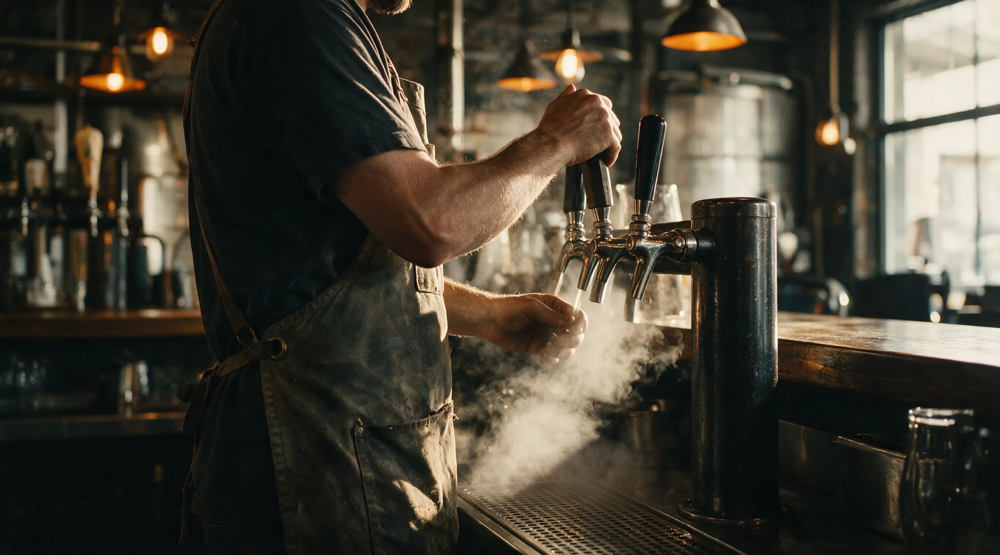
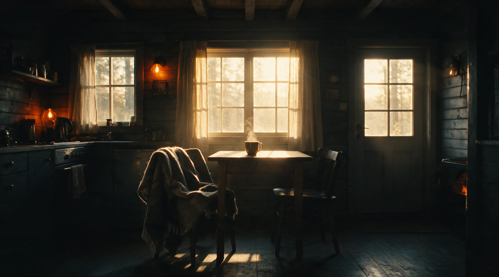
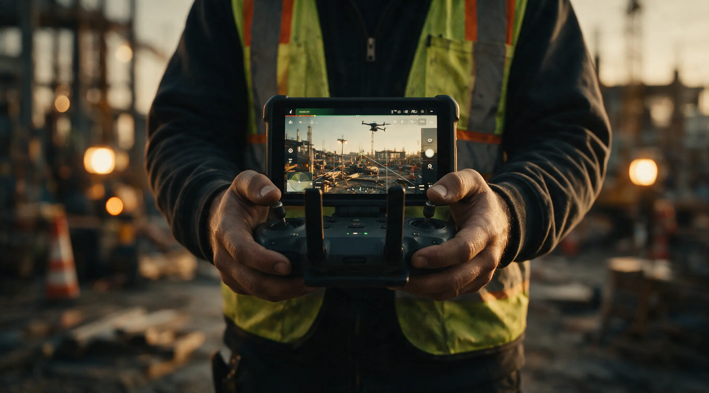

PROJECT 01

The story is already there. I film it.
Twenty years of camera for television, documentary, corporate, and commercial work: the brands that brew, build, and host.
Start a projectWILD CAMP MEDIA — DP · DRONE · JOBSITE · EVENTS
I've spent twenty years using my camera to tell stories for brands. Let's tell your story next.
I'm Chris McDaniel. I specialize in camera for television, documentary, corporate, and commercial productions. With over 20 years of professional experience, I know how to use the best tools and practices to tell your stories properly and poetically.
I'm confident in both single and multi-camera setups, and I make sure your message is delivered visually in the best way possible. Beyond thoughtful coverage, I specialize in beautiful interview setups and story-motivated, cinematic B-roll.
I do a lot of post-production myself, so I always cover scenes with editing in mind, giving the cut as much diverse footage to work with as possible.
My passion for outstanding visuals is rivaled only by my appreciation for tech: I stay current on the latest cameras, equipment, and practices. I'm proactive, a problem solver, a team player, and I bring a positive attitude to set. Let's work together.
FAA PART 107 · INSURED · 20+ YEARS BEHIND CAMERA · GREENSBORO, NC

12A 14C
14CKEEP · [PROJECT TODO]
15A
21B
 22D
22D27A
28B 33A
33A
35B
36BOne camera. All of it.
Same shooter on the brewery floor, the job site, and the drone controls.
Four ways to hire WCM.
Pick the scene you need. Every page carries its own work, rates talk, and a direct line.
DP / Video
Camera, lighting, small-crew production for commercial, corporate, and documentary work.
Check availabilityDrone
FAA Part 107 aerial photo and video for TV, corporate, commercial, and job sites.
See the aerial workJobsite
Progress documentation, project recaps, recruiting and culture films for builders.
Discuss your jobsiteEvents
Workshops, listening club nights, and screenings hosted by WCM. RSVP or buy tickets.
See what's onPROJECT 02
Jobsite recap series
PROJECT 03
Aerial site survey
PROJECT 04